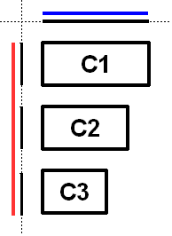
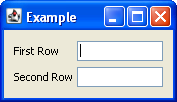

- java.lang.Object
-
- javax.swing.GroupLayout
-
- All Implemented Interfaces:
- LayoutManager， LayoutManager2
public class GroupLayout extends Object implements LayoutManager2
GroupLayout是LayoutManager，分层组组件来定位他们在Container。GroupLayout用建设者，但可以手工编码以及。分组是由Group类实例。GroupLayout支持两种类型的组。顺序组依次将子元素顺序排列，一个接一个。平行组将其子元素在四种方式中的一种。每个组可以包含任意数量的元素，一个元素是一个
Group，Component，或间隙。差距可以被认为是一个无形的组成部分，具有最低，首选和最大尺寸。此外GroupLayout支持优先的差距，其价值来源于LayoutStyle。元素类似于一个弹簧。每个元素都有一个指定的最小值，首选和最大值的范围。差距有开发商指定的范围，或一个范围由
LayoutStyle。对于Components范围从Component的getMinimumSize确定，getPreferredSize和getMaximumSize方法。此外，当加入Components你可以指定一个特定的范围内使用而不是从组件。一Group范围是由集团的类型的确定。一个ParallelGroup的范围是其元素的范围最大。一个SequentialGroup的范围是其元素的范围和。GroupLayout对待各轴独立。也就是说，有一个代表水平轴的组，和一个代表垂直轴的组。水平组负责确定沿水平轴线的最小、优选和最大尺寸以及设置包含在它中的部件的x和宽度。垂直组负责确定沿垂直轴的最小，优选和最大尺寸以及设置包含在它的组件的Y和高度。每个Component必须同时在水平和垂直组存在，否则IllegalStateException扔在布局，或当最小或最大尺寸要求，优先。下面的图显示了水平轴上的顺序组。序列组包含三个组件。沿垂直轴使用一个平行组。

为了加强每一个轴被独立处理的图表显示每个组和元素沿每个轴的范围。每个组件的范围已被投影到轴上，并组呈现在蓝色（水平）和红色（垂直）。为可读性，在顺序组中的每个元素之间有一个间隙。
沿水平轴的顺序组呈现为一个坚实的蓝色线。注意顺序组是它包含的子元素的总和。
沿垂直轴平行组是每一个组件的高度的最大值。由于所有三个组分都具有相同的高度，平行组具有相同的高度。
下面的图显示了相同的三个组件，但沿水平轴和顺序组沿垂直轴的平行组。

作为
c1是最大的三个部件，平行组的大小c1。作为c2和c3小于c1他们是根据指定的元件对齐对齐（如果指定）或平行组的默认对齐方式。图中的c2和c3与LEADING对准了。如果组件的方向从右到左，然后c2c3将位于对面。下面的图显示了水平和垂直轴上的顺序组。

GroupLayout提供插入Components能力之间的差距。这种差距的大小是由LayoutStyle实例确定。这可能是打开使用setAutoCreateGaps方法。同样，你可以使用setAutoCreateContainerGaps方法插入组件，触摸的父容器的边缘之间的间隙。下面建立一个由一列中的两个标签面板，然后在下一栏两文本框：
组件面板=…；grouplayout布局=新grouplayout（面板）；面板设置布局（布局）；/打开自动添加组件之间的间隙布局。setautocreategaps（真的）；/打开自动创建触摸组件之间的间隙容器和容器的边缘。布局。setautocreatecontainergaps（真的）；/创建一个水平轴的顺序组。grouplayout.sequentialgroup H组= createsequentialgroup()布局；顺序组依次包含两个平行组。一个平行组包含标签，另一组包含文本字段。沿着水平轴的平行组中的标签/ /将它们放置在同一个X位置。/ //变量缩进是用来加强分组的水平。H组。createparallelgroup() addgroup（布局。addcomponent（标签）。addcomponent（label2））；H组。createparallelgroup() addgroup（布局。addcomponent（TF1）。addcomponent（TF2））；布局sethorizontalgroup（H组）；/创建一个垂直轴的顺序组。grouplayout.sequentialgroup V = createsequentialgroup()布局；的顺序组包含两个对齐的平行组沿着基线的内容。第一平行组包含第一个标签和文本字段，第二个并行组包含第二个标签和文本字段。通过使用一个连续的组标签和文本字段相互垂直放置的位置。V。addgroup（布局。createparallelgroup（对齐。基线）。addcomponent（标签）。addcomponent（TF1））；V。addgroup（布局。createparallelgroup（对齐。基线）。addcomponent（label2）。addcomponent（TF2））；布局。setverticalgroup（V）；
当运行以下是产生。

这个布局包括以下几个。
- 水平轴由一个包含两个平行组的序列组。第一个并行组包含标签，第二个平行组包含文本字段。
- 垂直轴由一个包含两个平行组的序列组。并行组被配置为沿着基线对齐它们的组件。第一并行组包含第一标签和第一文本字段，第二组包括第二标签和第二文本字段。
- 你不需要明确地向容器中添加组件；这是间接地通过一对
Groupadd方法做的。 - 各种
add方法返回调用者。这可以很容易地链接调用。例如，group.addComponent(label1).addComponent(label2);相当于group.addComponent(label1); group.addComponent(label2);。 - 有
Groups没有公共构造函数；而用GroupLayout创建方法。
- 从以下版本开始：
- 一点六
-
-
Nested Class Summary
Nested Classes Modifier and Type Class and Description static classGroupLayout.Alignment的可能途径ParallelGroup枚举可以使孩子。classGroupLayout.GroupclassGroupLayout.ParallelGroup一个Group对齐和大小的孩子。classGroupLayout.SequentialGroup一个Group，位置和大小的元素的顺序，一个接一个。
-
Field Summary
Fields Modifier and Type Field and Description static intDEFAULT_SIZE表示从组件或间隙的大小应用于特定的范围值。static intPREFERRED_SIZE表示从组件或间隙中的首选大小应用于特定范围值。
-
构造方法摘要
构造方法 Constructor and Description GroupLayout(Container host)创建一个指定的ContainerGroupLayout。
-
方法摘要
所有方法 接口方法 具体的方法 Modifier and Type Method and Description voidaddLayoutComponent(Component component, Object constraints)通知，Component已添加到父容器。voidaddLayoutComponent(String name, Component component)通知，Component已添加到父容器。GroupLayout.ParallelGroupcreateBaselineGroup(boolean resizable, boolean anchorBaselineToTop)创建并返回一个ParallelGroup对齐是沿基线元素。GroupLayout.ParallelGroupcreateParallelGroup()创建并返回一个与Alignment.LEADING对准ParallelGroup。GroupLayout.ParallelGroupcreateParallelGroup(GroupLayout.Alignment alignment)创建并返回一个与指定的对齐ParallelGroup。GroupLayout.ParallelGroupcreateParallelGroup(GroupLayout.Alignment alignment, boolean resizable)创建并返回一个与指定的对齐ParallelGroup和大小调整行为。GroupLayout.SequentialGroupcreateSequentialGroup()创建并返回一个SequentialGroup。booleangetAutoCreateContainerGaps()返回true如果容器和组件之间的间隙，边境的集装箱自动创建。booleangetAutoCreateGaps()返回true如果组件之间的间隙自动创建。booleangetHonorsVisibility()返回时，是否考虑组件的可见性大小和定位组件。floatgetLayoutAlignmentX(Container parent)返回沿X轴的对齐方式。floatgetLayoutAlignmentY(Container parent)返回沿Y轴的对齐方式。LayoutStylegetLayoutStyle()返回用于组件之间的差距计算LayoutStyle优先。voidinvalidateLayout(Container parent)无效的布局，表明如果布局管理器已缓存的信息应该被丢弃。voidlayoutContainer(Container parent)指定指定的容器。voidlinkSize(Component... components)强制指定的组件具有相同的大小，无论它们的首选，最小或最大大小。voidlinkSize(int axis, Component... components)强制指定的组件沿指定的轴具有相同的大小，而不管它们的首选，最小或最大大小。DimensionmaximumLayoutSize(Container parent)返回指定容器的最大大小。DimensionminimumLayoutSize(Container parent)返回指定容器的最小大小。DimensionpreferredLayoutSize(Container parent)返回指定容器的首选大小。voidremoveLayoutComponent(Component component)通知，Component已从父容器中移除。voidreplace(Component existingComponent, Component newComponent)用新的替换现有组件。voidsetAutoCreateContainerGaps(boolean autoCreateContainerPadding)设置容器和触摸容器边框之间的组件之间的间隙是否应自动创建。voidsetAutoCreateGaps(boolean autoCreatePadding)设置是否自动创建组件之间的间隙。voidsetHonorsVisibility(boolean honorsVisibility)设置大小和定位组件时是否考虑组件的可见性。voidsetHonorsVisibility(Component component, Boolean honorsVisibility)设置组件的可见性是否被考虑用于大小和定位。voidsetHorizontalGroup(GroupLayout.Group group)集Group沿水平轴的位置和大小的组件。voidsetLayoutStyle(LayoutStyle layoutStyle)设置用于计算元件之间的间隙的LayoutStyle优先。voidsetVerticalGroup(GroupLayout.Group group)集Group沿垂直轴的位置和大小的组件。StringtoString()返回该GroupLayout字符串表示形式。
-
-
-
Field Detail
-
DEFAULT_SIZE
public static final int DEFAULT_SIZE
表示从组件或间隙的大小应用于特定的范围值。
-
PREFERRED_SIZE
public static final int PREFERRED_SIZE
表示从组件或间隙中的首选大小应用于特定范围值。
-
-
Constructor Detail
-
GroupLayout
public GroupLayout(Container host)
创建一个指定的ContainerGroupLayout。- 参数
-
host-Container的GroupLayout是LayoutManager为 - 异常
-
IllegalArgumentException如果主机null
-
-
方法详细信息
-
setHonorsVisibility
public void setHonorsVisibility(boolean honorsVisibility)
设置大小和定位组件时是否考虑组件的可见性。一个价值true表明非可视组件不应该作为布局的一部分。一个价值false表明部件应定位和大小的不可见性。一个价值
false是有用的当组件的可见性是动态调整的，你不想周围的元件和尺寸变化。指定的值用于不具有指定的显式可见性的组件使用。
默认的是
true。- 参数
-
honorsVisibility-无论是组件的可见性考虑尺寸和定位元件 - 另请参见：
-
setHonorsVisibility(Component,Boolean)
-
getHonorsVisibility
public boolean getHonorsVisibility()
返回时，是否考虑组件的可见性大小和定位组件。- 结果
- 当大小调整和定位组件时，是否考虑组件的可见性
-
setHonorsVisibility
public void setHonorsVisibility(Component component, Boolean honorsVisibility)
设置组件的可见性是否被考虑用于大小和定位。一个价值Boolean.TRUE表明如果component不可见，它不应该作为布局的一部分。一个价值false表明component定位和大小的不管它的知名度。一个价值null表示由单个参数的方法setHonorsVisibility指定的值应该被使用。如果
component是不是孩子的Container这GroupLayout是管理，它将被添加到Container。- 参数
-
component-组件 -
honorsVisibility-是否应该考虑这component能见度的大小和位置 - 异常
-
如果是
nullcomponentIllegalArgumentException - 另请参见：
-
setHonorsVisibility(Component,Boolean)
-
setAutoCreateGaps
public void setAutoCreateGaps(boolean autoCreatePadding)
设置是否自动创建组件之间的间隙。例如，如果这是true你加两组件到一个SequentialGroup两部件之间的间隙是自动创建的。默认的是false。- 参数
-
autoCreatePadding是否自动创建组件之间的间隙
-
getAutoCreateGaps
public boolean getAutoCreateGaps()
返回true如果组件之间的间隙自动创建。- 结果
-
true如果组件之间的间隙自动创建
-
setAutoCreateContainerGaps
public void setAutoCreateContainerGaps(boolean autoCreateContainerPadding)
设置容器和触摸容器边框之间的组件之间的间隙是否应自动创建。默认的是false。- 参数
-
autoCreateContainerPadding无论容器和组件接触的容器边界之间的差距将会被自动创建
-
getAutoCreateContainerGaps
public boolean getAutoCreateContainerGaps()
返回true如果容器和组件之间的间隙，边境的集装箱自动创建。- 结果
-
true如果容器和组件之间的间隙，边境的集装箱自动创建
-
setHorizontalGroup
public void setHorizontalGroup(GroupLayout.Group group)
集Group沿水平轴的位置和大小的组件。- 参数
-
group-Group沿水平轴的位置和大小的组件 - 异常
-
IllegalArgumentException如果集团是null
-
setVerticalGroup
public void setVerticalGroup(GroupLayout.Group group)
集Group沿垂直轴的位置和大小的组件。- 参数
-
group-Group沿垂直轴的位置和大小的组件 - 异常
-
IllegalArgumentException如果集团是null
-
createSequentialGroup
public GroupLayout.SequentialGroup createSequentialGroup()
创建并返回一个SequentialGroup。- 结果
-
一个新的
SequentialGroup
-
createParallelGroup
public GroupLayout.ParallelGroup createParallelGroup()
创建并返回一个与Alignment.LEADING对准ParallelGroup。这是一个更一般的createParallelGroup(Alignment)方法覆盖的方法。- 结果
-
一个新的
ParallelGroup - 另请参见：
-
createParallelGroup(Alignment)
-
createParallelGroup
public GroupLayout.ParallelGroup createParallelGroup(GroupLayout.Alignment alignment)
创建并返回一个与指定的对齐ParallelGroup。这是一个与第二个参数提供true更一般的createParallelGroup(Alignment,boolean)方法覆盖的方法。- 参数
-
alignment-组的元素的对齐方式 - 结果
-
一个新的
ParallelGroup - 异常
-
如果是
nullalignmentIllegalArgumentException - 另请参见：
-
createBaselineGroup(boolean, boolean)，GroupLayout.ParallelGroup
-
createParallelGroup
public GroupLayout.ParallelGroup createParallelGroup(GroupLayout.Alignment alignment, boolean resizable)
创建并返回一个ParallelGroup与指定的对齐和调整大小行为。这孩子怎么alignment参数指定元素的位置，不填写组。例如，如果一个与TRAILING对准ParallelGroup给出100个孩子只需要50，孩子被放置在位置50（以左至右组件定位）。基线对齐是唯一有用的，当使用沿垂直轴。一个
ParallelGroup沿水平轴的基线对齐创建作为LEADING。参考
ParallelGroup在基线组的行为细节。- 参数
-
alignment-组的元素的对齐方式 -
resizable-true如果组的大小可调整；如果是不可调整大小的首选大小用于最小和最大尺寸的组 - 结果
-
一个新的
ParallelGroup - 异常
-
如果是
nullalignmentIllegalArgumentException - 另请参见：
-
createBaselineGroup(boolean, boolean)，GroupLayout.ParallelGroup
-
createBaselineGroup
public GroupLayout.ParallelGroup createBaselineGroup(boolean resizable, boolean anchorBaselineToTop)
创建并返回一个ParallelGroup对齐是沿基线元素。- 参数
-
resizable-组是否可调整大小 -
anchorBaselineToTop无论基线锚定到组的顶部或底部 - 另请参见：
-
createBaselineGroup(boolean, boolean)，GroupLayout.ParallelGroup
-
linkSize
public void linkSize(Component... components)
强制指定的组件具有相同的大小，无论它们的首选，最小或最大大小。链接的组件被给定的每个链接组件的首选大小的最大值。例如，如果您将两个组件与一个优选的宽度为10和20连接，这两个组件都给出了宽度为20。这可以使用多次来强制任何数量的组件共享相同的大小。
连接组件不可调整大小。
- 参数
-
components-这是Components具有相同的尺寸 - 异常
-
IllegalArgumentException-如果components是null，或包含null - 另请参见：
-
linkSize(int,Component[])
-
linkSize
public void linkSize(int axis, Component... components)强制指定的组件沿指定的轴具有相同的大小，而不管它们的首选，最小或最大大小。链接的组件被给定的每个链接组件的首选大小的最大值。例如，如果沿水平轴连接两个组件，而首选的宽度为10和20，这两个组件都给出了宽度为20。这可以使用多次来强制任何数量的组件共享相同的大小。
联系
Components不可调整大小。- 参数
-
components-这是Components具有相同的尺寸 -
axis-轴连接尺寸；一个SwingConstants.HORIZONTAL或SwingConstans.VERTICAL - 异常
-
IllegalArgumentException-如果components是null，或包含null；或axis不SwingConstants.HORIZONTAL或SwingConstants.VERTICAL
-
replace
public void replace(Component existingComponent, Component newComponent)
用新的替换现有组件。- 参数
-
existingComponent-应该被删除并替换newComponent组件 -
newComponent-放在existingComponent的地方组件 - 异常
-
IllegalArgumentException-如果组件是null或existingComponent不被这个布局管理器管理
-
setLayoutStyle
public void setLayoutStyle(LayoutStyle layoutStyle)
设置用于计算元件之间的间隙的LayoutStyle优先。一个价值null表示LayoutStyle共享实例应用。- 参数
-
layoutStyle-LayoutStyle使用 - 另请参见：
-
LayoutStyle
-
getLayoutStyle
public LayoutStyle getLayoutStyle()
返回用于组件之间的差距计算LayoutStyle优先。返回指定setLayoutStyle的价值，这可能是null。- 结果
-
用于组件之间的差距计算
LayoutStyle优先
-
addLayoutComponent
public void addLayoutComponent(String name, Component component)
通知，Component已添加到父容器。你不应该直接调用这个方法，你应该使用的一个Group方法添加一个Component。- Specified by:
-
addLayoutComponent接口LayoutManager - 参数
-
name要与组件关联的字符串 -
component-Component加以补充
-
removeLayoutComponent
public void removeLayoutComponent(Component component)
通知，Component已从父容器中移除。你不应该直接调用这个方法，而不是调用remove对母Container。- Specified by:
-
removeLayoutComponent接口LayoutManager - 参数
-
component-要移除的组件 - 另请参见：
-
Component.remove(java.awt.MenuComponent)
-
preferredLayoutSize
public Dimension preferredLayoutSize(Container parent)
返回指定容器的首选大小。- Specified by:
-
preferredLayoutSize接口LayoutManager - 参数
-
parent-返回容器的首选尺寸 - 结果
-
对于
parent首选大小 - 异常
-
IllegalArgumentException-如果parent是不一样的Container这个被创造出来的 -
IllegalStateException-如果任何组件添加到这个布局不同时在水平和垂直组 - 另请参见：
-
Container.getPreferredSize()
-
minimumLayoutSize
public Dimension minimumLayoutSize(Container parent)
返回指定容器的最小大小。- Specified by:
-
minimumLayoutSize接口LayoutManager - 参数
-
parent-返回容器的大小 - 结果
-
对于
parent最小尺寸 - 异常
-
IllegalArgumentException-如果parent并非是同一Container -
IllegalStateException-如果任何组件添加到这个布局不同时在水平和垂直组 - 另请参见：
-
Container.getMinimumSize()
-
layoutContainer
public void layoutContainer(Container parent)
指定指定的容器。- Specified by:
-
layoutContainer接口LayoutManager - 参数
-
parent-容器被设置 - 异常
-
IllegalStateException-如果任何组件添加到这个布局不同时在水平和垂直组
-
addLayoutComponent
public void addLayoutComponent(Component component, Object constraints)
通知，Component已添加到父容器。你不应该直接调用这个方法，你应该使用的一个Group方法添加一个Component。- Specified by:
-
addLayoutComponent接口LayoutManager2 - 参数
-
component-添加组件 -
constraints描述在放置组件
-
maximumLayoutSize
public Dimension maximumLayoutSize(Container parent)
返回指定容器的最大大小。- Specified by:
-
maximumLayoutSize接口LayoutManager2 - 参数
-
parent-返回容器的大小 - 结果
-
对于
parent最大尺寸 - 异常
-
IllegalArgumentException-如果parent并非是同一Container -
IllegalStateException-如果任何组件添加到这个布局不同时在水平和垂直组 - 另请参见：
-
Container.getMaximumSize()
-
getLayoutAlignmentX
public float getLayoutAlignmentX(Container parent)
返回沿X轴的对齐方式。这指定了组件如何与其他组件对齐的方式。的值应该是一个数字0和1之间，其中0个代表对齐的起源，1是对齐的最远的起源，0.5是中心等。- Specified by:
-
getLayoutAlignmentX接口LayoutManager2 - 参数
-
parent举办这次LayoutManager的Container - 结果
-
此实现返回
.5对齐； - 异常
-
IllegalArgumentException-如果parent并非是同一Container
-
getLayoutAlignmentY
public float getLayoutAlignmentY(Container parent)
返回沿Y轴的对齐方式。这指定了组件如何与其他组件对齐的方式。的值应该是一个数字0和1之间，其中0个代表对齐的起源，1是对齐的最远的起源，0.5是中心等。- Specified by:
-
getLayoutAlignmentY接口LayoutManager2 - 参数
-
parent举办这次LayoutManager的Container - 结果
-
此实现返回
.5对齐； - 异常
-
IllegalArgumentException-如果parent并非是同一Container
-
invalidateLayout
public void invalidateLayout(Container parent)
无效的布局，表明如果布局管理器已缓存的信息应该被丢弃。- Specified by:
-
invalidateLayout接口LayoutManager2 - 参数
-
parent举办这次的布局管理器的Container - 异常
-
IllegalArgumentException-如果parent并非是同一Container
-
-